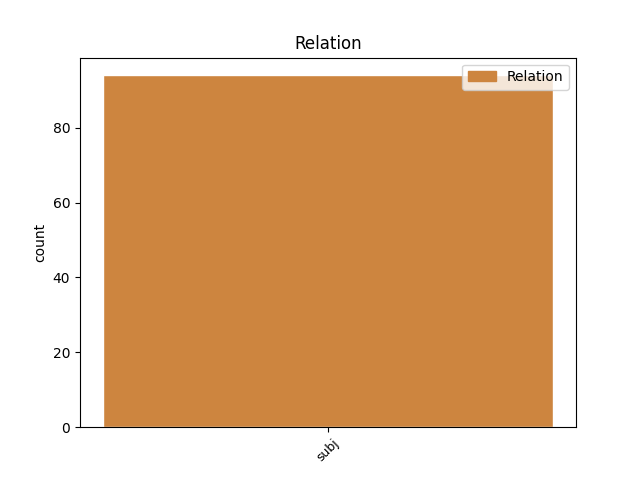
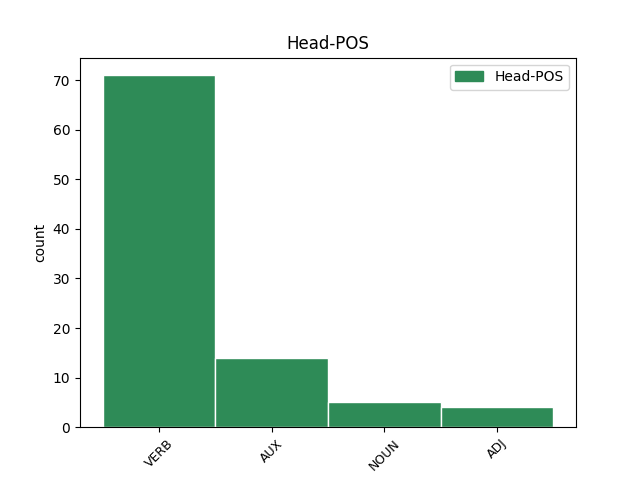
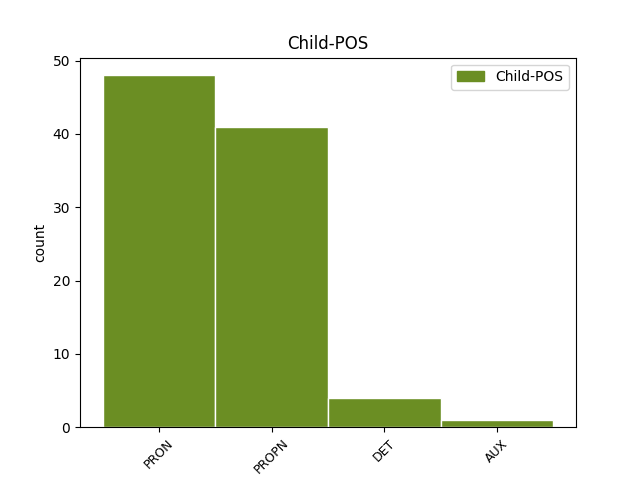

Distribution of features within this leaf



Agreement Rules sorted by frequency.
- When the dependent token is the subject(subj) of the head token, and the head token is VERB and the dependent token is PRON.
1 Deja _ _ _ _ 0 _ _ _
2 , _ _ _ _ 0 _ _ _
3 taip _ _ _ _ 0 _ _ _
4 nėra _ _ _ _ 0 _ _ _
5 – _ _ _ _ 0 _ _ _
6 šiandien _ _ _ _ 0 _ _ _
7 jie jie PRON PRP Case=Nom|Gender=Masc|Number=Plur|Person=3 9 subj _ En=they
8 pastebimai _ _ _ _ 0 _ _ _
9 aštrėja aštrėti VERB VBC Mood=Ind|Number=Plur|Person=3|Polarity=Pos|Reflex=No|Tense=Pres|VerbForm=Fin|Voice=Act 0 _ _ _
10 . _ _ _ _ 0 _ _ _
1 Sąjūdžio Sąjūdis PROPN NNP Case=Gen|Gender=Masc|Number=Sing 7 subj _ En=Sajudis
2 ir _ _ _ _ 0 _ _ _
3 ankstyvosios _ _ _ _ 0 _ _ _
4 nepriklausomybės _ _ _ _ 0 _ _ _
5 laikais _ _ _ _ 0 _ _ _
6 kartais _ _ _ _ 0 _ _ _
7 atrodė atrodyti VERB VBC Mood=Ind|Number=Sing|Person=3|Polarity=Pos|Reflex=No|Tense=Past|VerbForm=Fin|Voice=Act 0 _ _ _
8 , _ _ _ _ 0 _ _ _
9 jog _ _ _ _ 0 _ _ _
10 tie _ _ _ _ 0 _ _ _
11 nesutarimai _ _ _ _ 0 _ _ _
12 pamažu _ _ _ _ 0 _ _ _
13 , _ _ _ _ 0 _ _ _
14 bet _ _ _ _ 0 _ _ _
15 sėkmingai _ _ _ _ 0 _ _ _
16 sprendžiasi _ _ _ _ 0 _ _ _
17 . _ _ _ _ 0 _ _ _
1 Jį _ _ _ _ 0 _ _ _
2 , _ _ _ _ 0 _ _ _
3 beje _ _ _ _ 0 _ _ _
4 , _ _ _ _ 0 _ _ _
5 palaiko _ _ _ _ 0 _ _ _
6 ir _ _ _ _ 0 _ _ _
7 stiprina _ _ _ _ 0 _ _ _
8 faktas _ _ _ _ 0 _ _ _
9 , _ _ _ _ 0 _ _ _
10 kad _ _ _ _ 0 _ _ _
11 Lietuva Lietuva PROPN NNP Case=Nom|Gender=Fem|Number=Sing 13 subj _ En=Lithuania
12 visada _ _ _ _ 0 _ _ _
13 buvo būti AUX VBC Mood=Ind|Number=Sing|Person=3|Polarity=Pos|Reflex=No|Tense=Past|VerbForm=Fin|Voice=Act 0 _ _ _
14 – _ _ _ _ 0 _ _ _
15 nors _ _ _ _ 0 _ _ _
16 nebėra _ _ _ _ 0 _ _ _
17 – _ _ _ _ 0 _ _ _
18 agrarinė _ _ _ _ 0 _ _ _
19 , _ _ _ _ 0 _ _ _
20 sodiečių _ _ _ _ 0 _ _ _
21 visuomenė _ _ _ _ 0 _ _ _
22 . _ _ _ _ 0 _ _ _
1 Ji ji PRON PRP Case=Nom|Gender=Fem|Number=Sing|Person=3 2 subj _ En=it
2 yra būti AUX VBC Mood=Ind|Number=Sing|Person=3|Polarity=Pos|Reflex=No|Tense=Pres|VerbForm=Fin|Voice=Act 0 _ _ _
3 anachroniškas _ _ _ _ 0 _ _ _
4 mentalinis _ _ _ _ 0 _ _ _
5 konstruktas _ _ _ _ 0 _ _ _
6 , _ _ _ _ 0 _ _ _
7 paveldėtas _ _ _ _ 0 _ _ _
8 iš _ _ _ _ 0 _ _ _
9 XIX _ _ _ _ 0 _ _ _
10 amžiaus _ _ _ _ 0 _ _ _
11 svajotojų _ _ _ _ 0 _ _ _
12 . _ _ _ _ 0 _ _ _
1 Šiandien _ _ _ _ 0 _ _ _
2 daug _ _ _ _ 0 _ _ _
3 kas _ _ _ _ 0 _ _ _
4 įtartų _ _ _ _ 0 _ _ _
5 , _ _ _ _ 0 _ _ _
6 kad _ _ _ _ 0 _ _ _
7 Sokratas _ _ _ _ 0 _ _ _
8 yra _ _ _ _ 0 _ _ _
9 žydas _ _ _ _ 0 _ _ _
10 , _ _ _ _ 0 _ _ _
11 ar _ _ _ _ 0 _ _ _
12 bent _ _ _ _ 0 _ _ _
13 turėjo _ _ _ _ 0 _ _ _
14 žydę _ _ _ _ 0 _ _ _
15 motiną _ _ _ _ 0 _ _ _
16 , _ _ _ _ 0 _ _ _
17 o _ _ _ _ 0 _ _ _
18 jei _ _ _ _ 0 _ _ _
19 ne _ _ _ _ 0 _ _ _
20 , _ _ _ _ 0 _ _ _
21 tai _ _ _ _ 0 _ _ _
22 jo _ _ _ _ 0 _ _ _
23 žmona _ _ _ _ 0 _ _ _
24 Ksantipė Ksantipė PROPN NNP Case=Nom|Gender=Fem|Number=Sing 26 subj _ En=Xantippa
25 tikriausia _ _ _ _ 0 _ _ _
26 žydė žydė NOUN NN Case=Nom|Gender=Fem|Number=Sing 0 _ _ _
27 . _ _ _ _ 0 _ _ _
1 Iš _ _ _ _ 0 _ _ _
2 esmės _ _ _ _ 0 _ _ _
3 jie _ _ _ _ 0 _ _ _
4 puikiai _ _ _ _ 0 _ _ _
5 užkonservavo _ _ _ _ 0 _ _ _
6 kaip _ _ _ _ 0 _ _ _
7 tik _ _ _ _ 0 _ _ _
8 tokią _ _ _ _ 0 _ _ _
9 lietuvių _ _ _ _ 0 _ _ _
10 tautą _ _ _ _ 0 _ _ _
11 , _ _ _ _ 0 _ _ _
12 kokia koks DET WDT Case=Nom|Gender=Fem|Number=Sing 13 subj _ En=what
13 patinka patikti VERB VBC Mood=Ind|Number=Sing|Person=3|Polarity=Pos|Reflex=No|Tense=Pres|VerbForm=Fin|Voice=Act 0 _ _ _
14 mūsų _ _ _ _ 0 _ _ _
15 pseudointelektualams _ _ _ _ 0 _ _ _
16 . _ _ _ _ 0 _ _ _
1 Gal _ _ _ _ 0 _ _ _
2 tas _ _ _ _ 0 _ _ _
3 Strepsiadas Strepsiadas PROPN NNP Case=Nom|Gender=Masc|Number=Sing 5 subj _ En=Strepsiade
4 truputį _ _ _ _ 0 _ _ _
5 komiškas komiškas ADJ JJL Case=Nom|Definite=Ind|Degree=Pos|Gender=Masc|Number=Sing 0 _ _ _
6 , _ _ _ _ 0 _ _ _
7 tačiau _ _ _ _ 0 _ _ _
8 be _ _ _ _ 0 _ _ _
9 jo _ _ _ _ 0 _ _ _
10 , _ _ _ _ 0 _ _ _
11 anot _ _ _ _ 0 _ _ _
12 Aristofano _ _ _ _ 0 _ _ _
13 , _ _ _ _ 0 _ _ _
14 visuomenė _ _ _ _ 0 _ _ _
15 ir _ _ _ _ 0 _ _ _
16 valstybė _ _ _ _ 0 _ _ _
17 nedelsiant _ _ _ _ 0 _ _ _
18 sugriūtų _ _ _ _ 0 _ _ _
19 . _ _ _ _ 0 _ _ _
1 Į _ _ _ _ 0 _ _ _
2 tai _ _ _ _ 0 _ _ _
3 man _ _ _ _ 0 _ _ _
4 bus _ _ _ _ 0 _ _ _
5 atsakyta _ _ _ _ 0 _ _ _
6 : _ _ _ _ 0 _ _ _
7 „ _ _ _ _ 0 _ _ _
8 čia _ _ _ _ 0 _ _ _
9 ne _ _ _ _ 0 _ _ _
10 mes mes PRON PRP Case=Nom|Number=Plur|Person=1 12 subj _ En=we
11 vieni _ _ _ _ 0 _ _ _
12 kalti kaltas ADJ JJL Case=Nom|Definite=Ind|Degree=Pos|Gender=Masc|Number=Plur 0 _ _ _
13 “ _ _ _ _ 0 _ _ _
14 . _ _ _ _ 0 _ _ _
1 Kas _ _ _ _ 0 _ _ _
2 sovietams _ _ _ _ 0 _ _ _
3 tikrai _ _ _ _ 0 _ _ _
4 rūpėjo _ _ _ _ 0 _ _ _
5 padaryti _ _ _ _ 0 _ _ _
6 , _ _ _ _ 0 _ _ _
7 tas _ _ _ _ 0 _ _ _
8 jiems _ _ _ _ 0 _ _ _
9 ir _ _ _ _ 0 _ _ _
10 pavyko _ _ _ _ 0 _ _ _
11 : _ _ _ _ 0 _ _ _
12 savo _ _ _ _ 0 _ _ _
13 valdinius _ _ _ _ 0 _ _ _
14 , _ _ _ _ 0 _ _ _
15 kad _ _ _ _ 0 _ _ _
16 ir _ _ _ _ 0 _ _ _
17 kokia _ _ _ _ 0 _ _ _
18 kalba _ _ _ _ 0 _ _ _
19 jie _ _ _ _ 0 _ _ _
20 kalbėtų _ _ _ _ 0 _ _ _
21 ir _ _ _ _ 0 _ _ _
22 kuo _ _ _ _ 0 _ _ _
23 save _ _ _ _ 0 _ _ _
24 laikytų _ _ _ _ 0 _ _ _
25 , _ _ _ _ 0 _ _ _
26 jie _ _ _ _ 0 _ _ _
27 smarkiai _ _ _ _ 0 _ _ _
28 demoralizavo _ _ _ _ 0 _ _ _
29 , _ _ _ _ 0 _ _ _
30 įdiegė _ _ _ _ 0 _ _ _
31 jiems _ _ _ _ 0 _ _ _
32 siaurą _ _ _ _ 0 _ _ _
33 primityvų _ _ _ _ 0 _ _ _
34 mentalitetą _ _ _ _ 0 _ _ _
35 , _ _ _ _ 0 _ _ _
36 kurio _ _ _ _ 0 _ _ _
37 dalis dalis NOUN NN Case=Nom|Gender=Fem|Number=Sing 0 _ _ _
38 , _ _ _ _ 0 _ _ _
39 beje _ _ _ _ 0 _ _ _
40 , _ _ _ _ 0 _ _ _
41 buvo būti AUX VBC Mood=Ind|Number=Sing|Person=3|Polarity=Pos|Reflex=No|Tense=Past|VerbForm=Fin|Voice=Act 37 subj _ En=be
42 ir _ _ _ _ 0 _ _ _
43 ksenofobija _ _ _ _ 0 _ _ _
44 , _ _ _ _ 0 _ _ _
45 ir _ _ _ _ 0 _ _ _
46 neapykanta _ _ _ _ 0 _ _ _
47 visokiems _ _ _ _ 0 _ _ _
48 „ _ _ _ _ 0 _ _ _
49 kosmopolitams _ _ _ _ 0 _ _ _
50 “ _ _ _ _ 0 _ _ _
51 . _ _ _ _ 0 _ _ _
1 Bet _ _ _ _ 0 _ _ _
2 toks toks DET DT Case=Nom|Gender=Masc|Number=Sing 3 subj _ En=such
3 yra būti AUX VBC Mood=Ind|Number=Sing|Person=3|Polarity=Pos|Reflex=No|Tense=Pres|VerbForm=Fin|Voice=Act 0 _ _ _
4 vienintelis _ _ _ _ 0 _ _ _
5 humanistinis _ _ _ _ 0 _ _ _
6 ir _ _ _ _ 0 _ _ _
7 šiuolaikinis _ _ _ _ 0 _ _ _
8 , _ _ _ _ 0 _ _ _
9 taigi _ _ _ _ 0 _ _ _
10 vienintelis _ _ _ _ 0 _ _ _
11 priimtinas _ _ _ _ 0 _ _ _
12 požiūris _ _ _ _ 0 _ _ _
13 . _ _ _ _ 0 _ _ _
Disagree Examples:
1 Į _ _ _ _ 0 _ _ _
2 visuomenininkų _ _ _ _ 0 _ _ _
3 teikiamą _ _ _ _ 0 _ _ _
4 apdovanojimą _ _ _ _ 0 _ _ _
5 šiemet _ _ _ _ 0 _ _ _
6 taip _ _ _ _ 0 _ _ _
7 pat _ _ _ _ 0 _ _ _
8 pretendavo pretenduoti VERB VBC Mood=Ind|Number=Plur|Person=3|Polarity=Pos|Reflex=No|Tense=Past|VerbForm=Fin|Voice=Act 0 _ _ _
9 rašytojas _ _ _ _ 0 _ _ _
10 Marius marius PROPN NNP Case=Nom|Gender=Masc|Number=Sing 8 subj _ En=Marius
11 Ivaškevičius _ _ _ _ 0 _ _ _
12 ir _ _ _ _ 0 _ _ _
13 žurnalistas _ _ _ _ 0 _ _ _
14 Domas _ _ _ _ 0 _ _ _
15 Burkauskas _ _ _ _ 0 _ _ _
16 . _ _ _ _ 0 _ _ _
1 Bet _ _ _ _ 0 _ _ _
2 kad _ _ _ _ 0 _ _ _
3 ir _ _ _ _ 0 _ _ _
4 ką _ _ _ _ 0 _ _ _
5 sakysi _ _ _ _ 0 _ _ _
6 , _ _ _ _ 0 _ _ _
7 vienas _ _ _ _ 0 _ _ _
8 skirtumas _ _ _ _ 0 _ _ _
9 yra _ _ _ _ 0 _ _ _
10 akivaizdus _ _ _ _ 0 _ _ _
11 – _ _ _ _ 0 _ _ _
12 Sokratas _ _ _ _ 0 _ _ _
13 nebūtų _ _ _ _ 0 _ _ _
14 padegęs _ _ _ _ 0 _ _ _
15 Strepsiado Strepsiadas PROPN NNP Case=Gen|Gender=Masc|Number=Sing 16 subj _ En=Strepsiade
16 namų namai NOUN NN Case=Gen|Gender=Masc|Number=Plur 0 _ _ _
17 ir _ _ _ _ 0 _ _ _
18 nebūtų _ _ _ _ 0 _ _ _
19 jo _ _ _ _ 0 _ _ _
20 įskundinėjęs _ _ _ _ 0 _ _ _
21 valdžiai _ _ _ _ 0 _ _ _
22 . _ _ _ _ 0 _ _ _
1 Italų _ _ _ _ 0 _ _ _
2 , _ _ _ _ 0 _ _ _
3 graikų _ _ _ _ 0 _ _ _
4 ir _ _ _ _ 0 _ _ _
5 kitos _ _ _ _ 0 _ _ _
6 diasporos _ _ _ _ 0 _ _ _
7 taip _ _ _ _ 0 _ _ _
8 pat _ _ _ _ 0 _ _ _
9 didžiulės _ _ _ _ 0 _ _ _
10 , _ _ _ _ 0 _ _ _
11 bet _ _ _ _ 0 _ _ _
12 Italija Italija PROPN NNP Case=Nom|Gender=Fem|Number=Sing 17 subj _ En=Italy
13 ir _ _ _ _ 0 _ _ _
14 Graikija _ _ _ _ 0 _ _ _
15 dėl _ _ _ _ 0 _ _ _
16 to _ _ _ _ 0 _ _ _
17 nežuvo žūti VERB VBC Mood=Ind|Number=Plur|Person=3|Polarity=Neg|Reflex=No|Tense=Past|VerbForm=Fin|Voice=Act 0 _ _ _
18 . _ _ _ _ 0 _ _ _